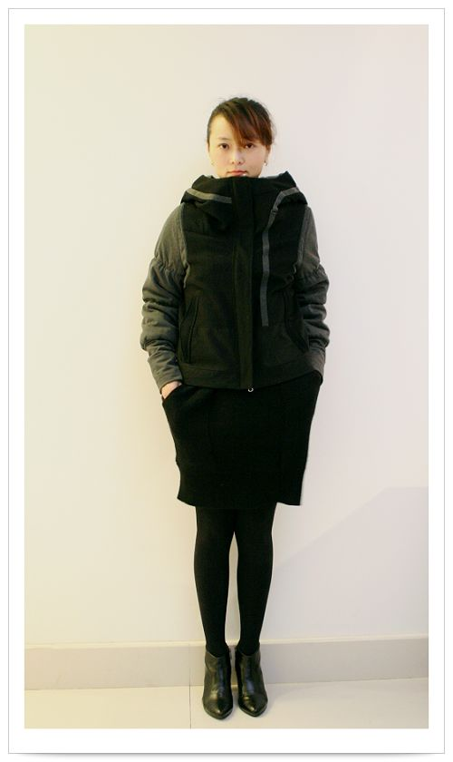
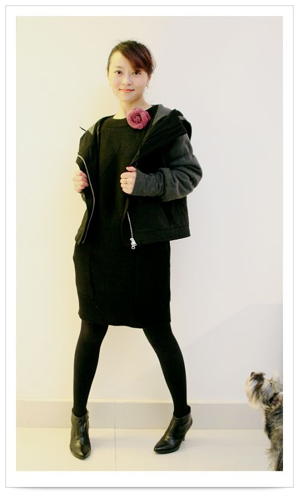
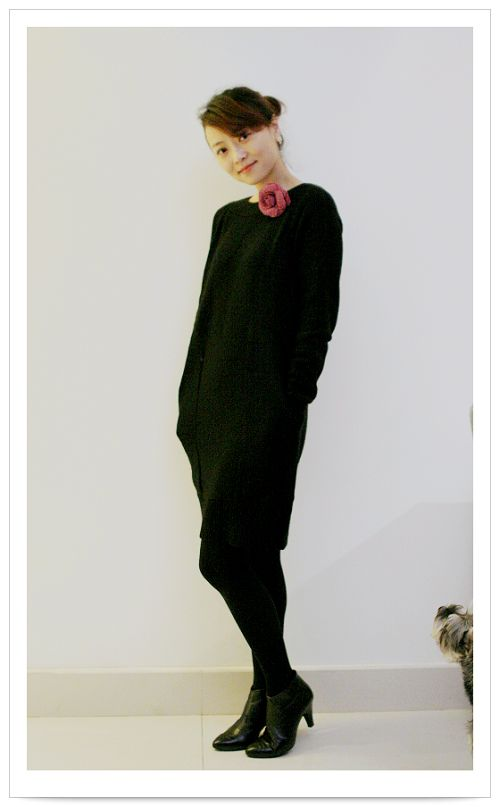

有个叫“Timothy zhang”的人，给我们整个公司每一个人发了同样的邮件，邮件内容很好“FUCKING ,STOP SEND THE EMAIL TO ME”。这段时间公司信箱每天接收大量垃圾邮件，估计又以我们公司的地址自动发给每个人信箱下的所有联系人...网络貌似传染病，分分钟，就都被感染了。其实任何东西都会被感染，比如情绪，比如审美，比如大姨妈。。。绝不危言耸听，关系越来越亲近的同性朋友，大姨妈的日子也会越来越接近。
这世界太神奇了。
我怀疑哪一天我会半身不遂？
哪一天我会不会把自己家给烧了？！
一觉醒来发觉从脖子到背部酸痛到僵硬...一壶奶茶小火炖了11个小时...忘得彻彻底底...
生活TMD的都停止了，只有这恼人的天气与工作。
有人丢了篇“叶兆言谈南京的‘尴尬’”的文章来问貌似南京人的我的观后感。当我看到一半时，我就觉得老叶太能扯了，罗罗嗦嗦写那么多字儿，就象听一个上了年纪的老太太在唠叨，如果哪一天不让他开口说话拿笔写字，他是不是会憋疯了？我看了一半就看不下去了，所谓“尴尬”就是四不象吧，以及我认为南京就是从农村人过渡到城市人，貌似城市的城市。
“三八节”半天休息，公司组织5、60个女人去汤山活动，想到那么多人同时泡在一口汤里还真是蛮壮观的。据说很爽，还吃了好菜。咱对集体活动本来兴趣就不大，休息那半天我计划着去买菜，可是怎么也走不了，工作到6点跑去吃百天酒，把自己灌得云里雾里跑去问问家遛狗...无论如何都要自勉一下：
1942年，不满女性在延安遭受歧视的丁玲写下《三八节有感》，并对女性提出以下四点忠告。
第一、不要让自己生病。只有健康同你最亲近，好好爱护它。
第二、使自己愉快。只有愉快里面才有青春，才有享受。
第三、用脑子。这，才不会上当，被一切甜蜜所蒙蔽，被小利所诱。
第四、下吃苦的决心，坚持到底。
劳动妇女最光荣，佩戴大红花过三八节：D


